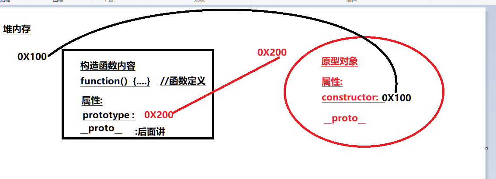
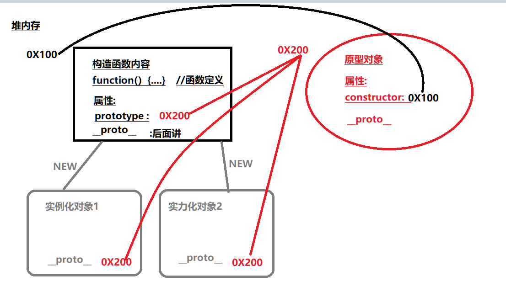
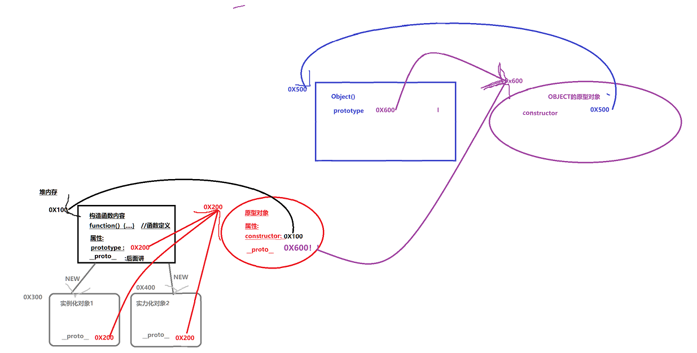
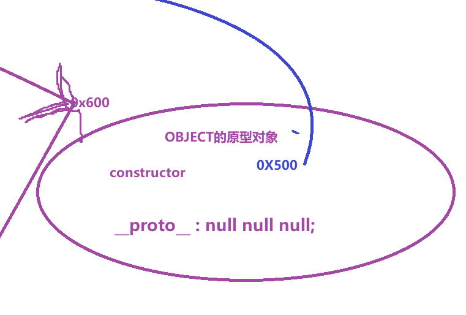

// 构造函数(妈,肉体)本身有两个属性:prototype(原型对象) 和__proto__ ; prototype指向构造函数的原型对象(灵魂); // 而构造函数的原型对象:prototype 属性也是一个对象,原型也有两个属性值:constructor(构造函数)和__proto__; constructor指向构造函数本身(肉体) ;
// 构造函数的所有实例化对象 也都有__proto__属性 ,__proto指向构造函数的原型(儿子的proto指向妈的灵魂),也就是说 //实例对象的__proto__和构造函数的prototype都指向构造函数的原型对象,本质上是对象的__proto__和构造函数的prototype存储的地址一致.
// 构造函数的原型对象也是对象啊,也有自己的创造者和__proto__(隐式原型对象),其创造者是Object(),所以构造函数原型对象__proto__指向Object的原型对象prototype;
// 而Object.prototype.__proto就暂时封顶了 值为null;
